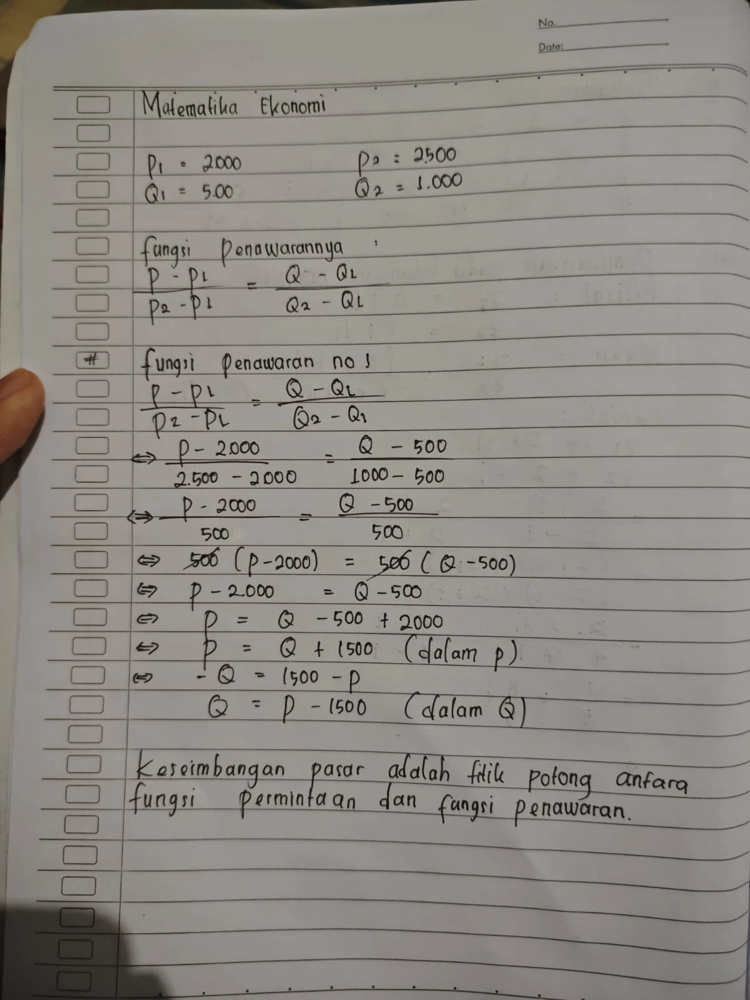
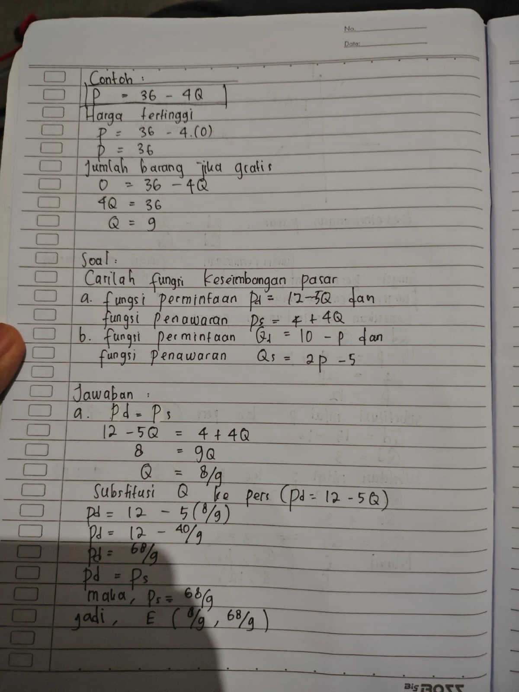
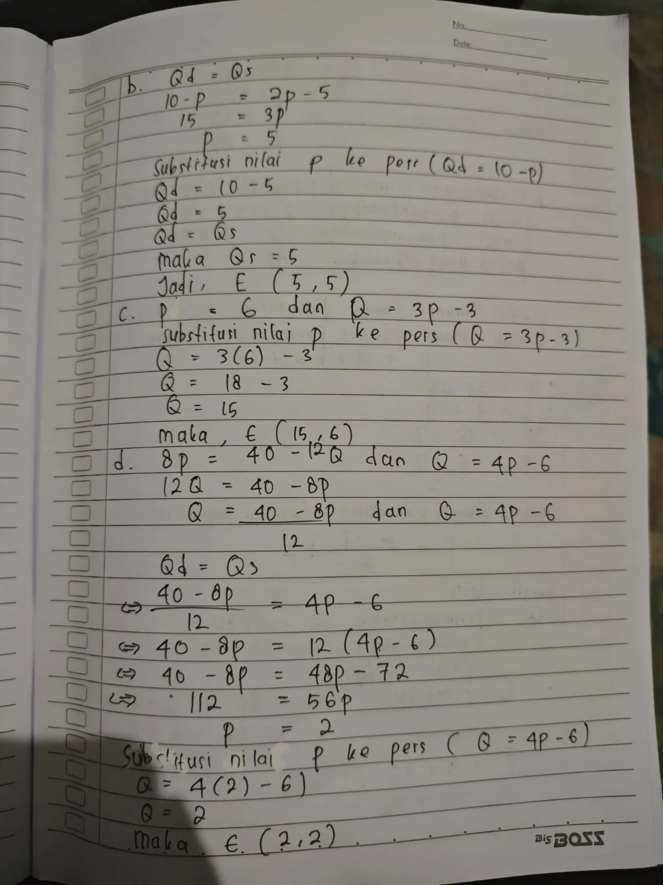
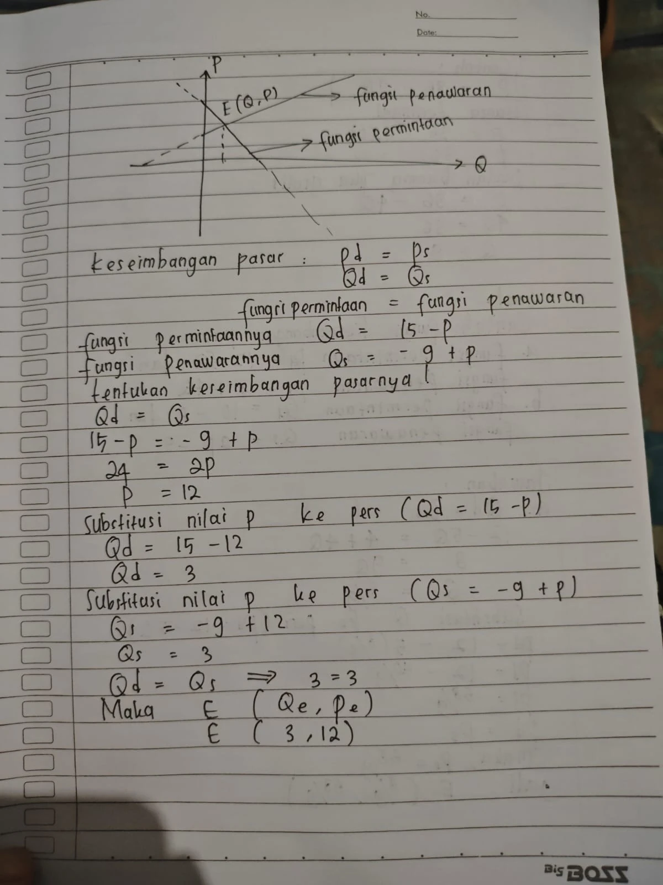
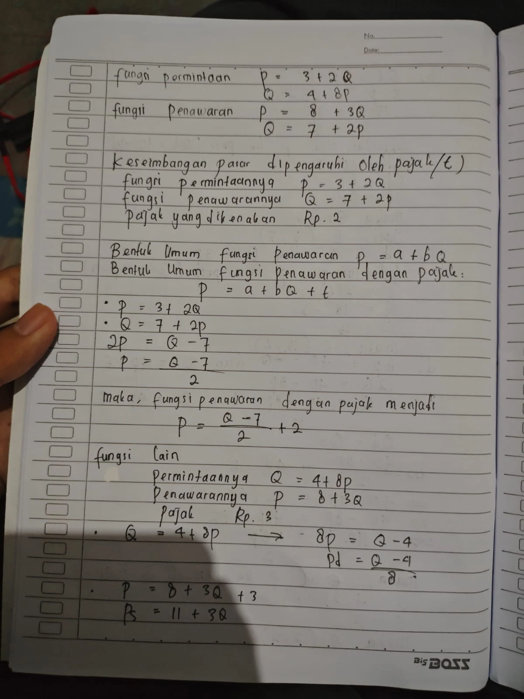
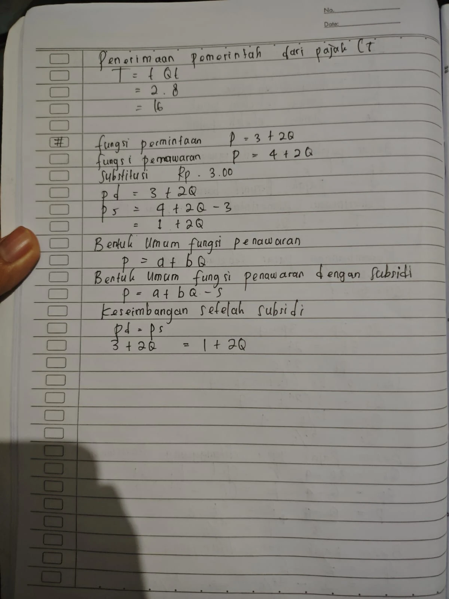
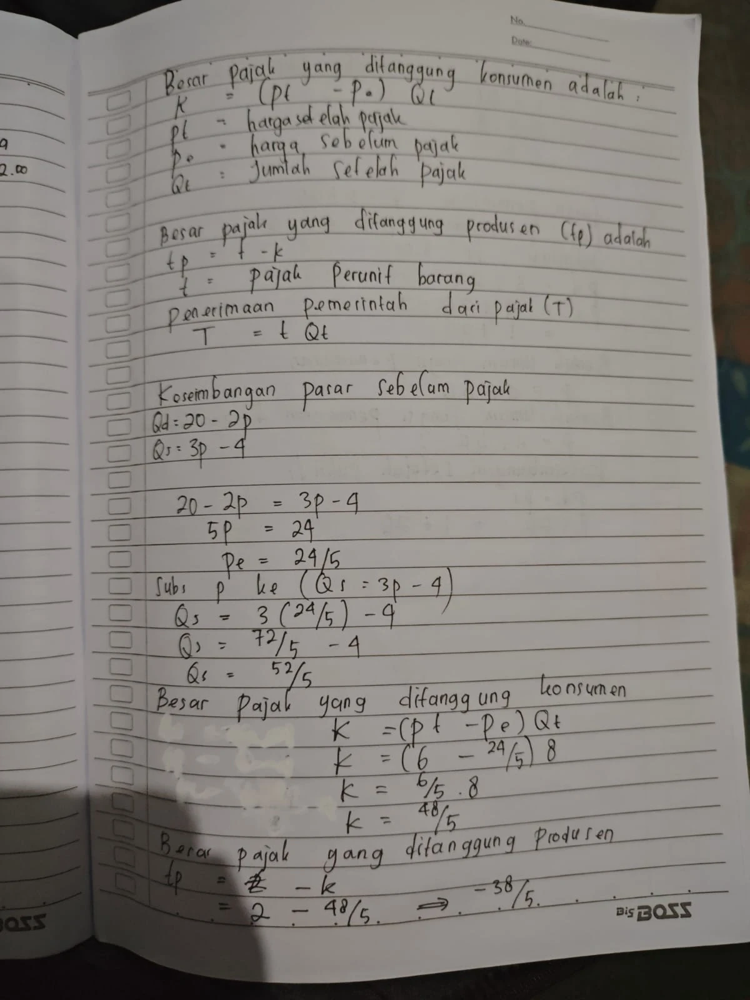
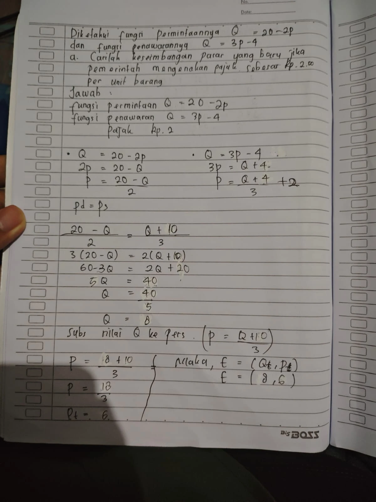
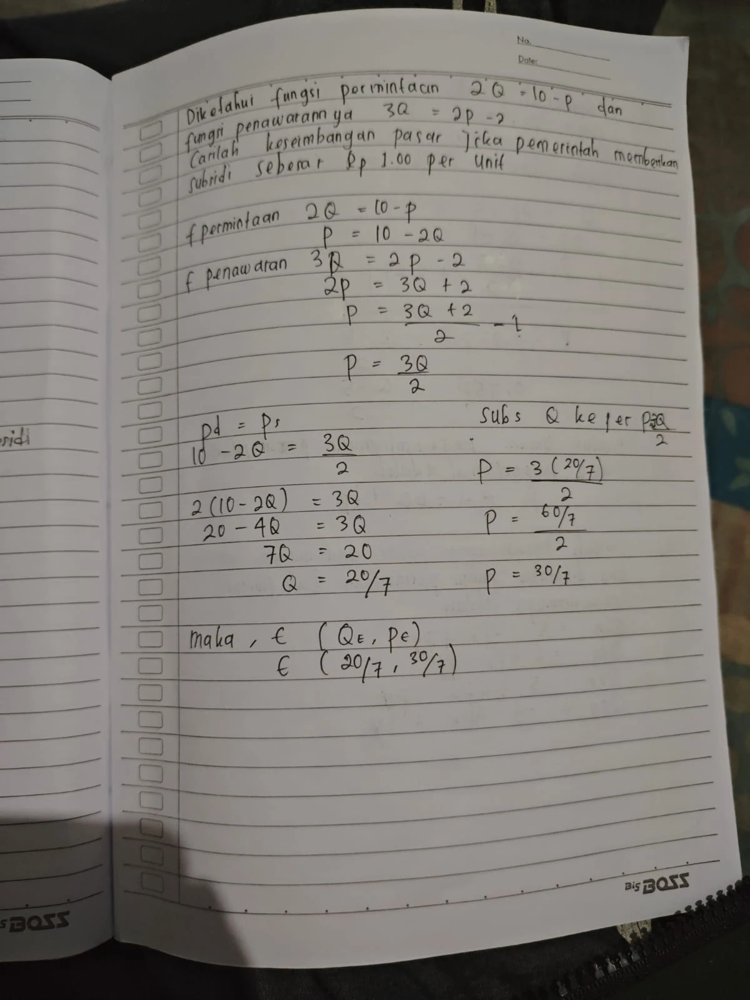
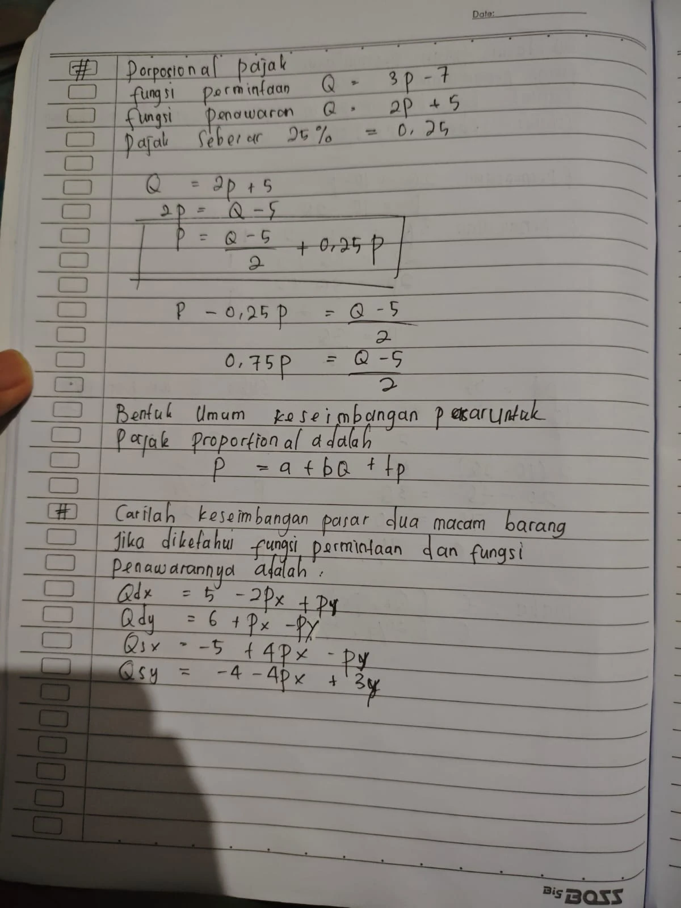

Keseimbangan Pasar, Pajak, Subsidi & Pasar Dua Komoditas
Pertemuan 03 · Kamis, 27 Agustus 2026
Transkripsi lengkap 10 foto catatan tulis tangan: membentuk fungsi dari dua titik, lima variasi keseimbangan pasar murni, pajak spesifik \(t=2\) dengan beban konsumen/produsen dan penerimaan negara, subsidi spesifik \(s=1\), pajak proporsional 25%, serta SPLDV dua komoditas.
0. Konvensi dan Notasi
| Simbol | Arti |
|---|---|
| \(Q\) | kuantitas (sumbu horizontal) |
| \(P\) | harga (sumbu vertikal) |
| \(E(Q_e,P_e)\) | titik keseimbangan, ditulis sebagai pasangan \((Q,P)\) |
| \(P_d,Q_d\) | harga/jumlah pada fungsi permintaan |
| \(P_s,Q_s\) | harga/jumlah pada fungsi penawaran |
| \(t\) | pajak per unit barang (pajak spesifik) |
| \(s\) | subsidi per unit barang |
| \(P_t,Q_t\) | harga dan jumlah setelah pajak |
| \(K\) | beban pajak yang ditanggung konsumen (total) |
| \(t_p\) | beban pajak yang ditanggung produsen (total) |
| \(T\) | penerimaan pemerintah dari pajak |
| \(S\) | belanja subsidi pemerintah |
I. Membentuk Fungsi dari Dua Titik
Rumus dua titik
Penyelesaian langkah demi langkah
Bentuk dalam \(Q\):
Harga tertinggi dan jumlah barang gratis (foto 0010)
Contoh untuk fungsi permintaan \(P=36-4Q\).
Harga tertinggi
Harga saat tidak ada barang yang diminta, substitusi \(Q=0\):
Jumlah barang jika gratis
Jumlah yang diminta saat harga nol, substitusi \(P=0\):
Kedua nilai ini adalah titik potong kurva permintaan dengan sumbu \(P\) dan sumbu \(Q\).
II. Keseimbangan Pasar Murni — 5 Variasi Latihan
Latihan (a) — kedua fungsi dalam bentuk \(P\)
Substitusi \(Q\) ke persamaan \(P_d=12-5Q\):
Karena \(P_d=P_s\), maka \(P_s=\frac{68}{9}\) juga. Jadi
Latihan (b) — kedua fungsi dalam bentuk \(Q\)
Substitusi nilai \(P\) ke persamaan \(Q_d=10-P\):
Karena \(Q_d=Q_s\), maka \(Q_s=5\). Jadi
Latihan (c) — harga tetap (permintaan horizontal)
Substitusi nilai \(P\) ke persamaan \(Q=3P-3\):
Latihan (d) — fungsi permintaan implisit
Ubah fungsi permintaan menjadi bentuk \(Q\):
Substitusi nilai \(P\) ke persamaan \(Q=4P-6\):
Latihan (e) — dilengkapi kurva (foto 0011)
Substitusi nilai \(P\) ke persamaan \(Q_d=15-P\):
Substitusi nilai \(P\) ke persamaan \(Q_s=-9+P\):
Uji balik: \(Q_d=Q_s\implies 3=3\) ✔
Rekapitulasi lima latihan
| No | Permintaan | Penawaran | \(Q_e\) | \(P_e\) |
|---|---|---|---|---|
| a | \(P_d=12-5Q\) | \(P_s=4+4Q\) | \(\frac{8}{9}\) | \(\frac{68}{9}\) |
| b | \(Q_d=10-P\) | \(Q_s=2P-5\) | \(5\) | \(5\) |
| c | \(P=6\) | \(Q=3P-3\) | \(15\) | \(6\) |
| d | \(8P=40-12Q\) | \(Q=4P-6\) | \(2\) | \(2\) |
| e | \(Q_d=15-P\) | \(Q_s=-9+P\) | \(3\) | \(12\) |
III. Pengaruh Pajak Spesifik \((t)\)
Bentuk umum (foto 0012)
Pajak per unit menggeser kurva penawaran vertikal ke atas sebesar \(t\): pada setiap tingkat kuantitas, produsen menuntut harga \(t\) lebih tinggi agar penerimaan bersihnya tidak berubah.
Rumus insidensi dan penerimaan (foto 0008 & 0009)
Besar pajak yang ditanggung konsumen:
dengan \(P_t\) = harga setelah pajak, \(P_e\) = harga sebelum pajak, \(Q_t\) = jumlah setelah pajak.
Penerimaan pemerintah dari pajak:
Besar pajak yang ditanggung produsen:
Latihan mekanisme pergeseran kurva (foto 0012)
Kasus 1
Permintaan \(P=3+2Q\); penawaran \(Q=7+2P\); pajak Rp 2.
Ubah penawaran ke bentuk \(P\):
Fungsi penawaran dengan pajak:
Kasus 2
Permintaan \(Q=4+8P\); penawaran \(P=8+3Q\); pajak Rp 3.
Ubah permintaan ke bentuk \(P\):
Penawaran setelah pajak:
Soal utama pajak spesifik \(t=2\) (foto 0006, 0008, 0009)
- Keseimbangan pasar sebelum pajak
\[Q_d=Q_s\]\[20-2P=3P-4\]\[5P=24\]\[P_e=\frac{24}{5}=4{,}8\]
Substitusi \(P_e\) ke persamaan \(Q_s=3P-4\):
\[Q_s=3\left(\frac{24}{5}\right)-4=\frac{72}{5}-4=\frac{72-20}{5}=\frac{52}{5}=10{,}4\]\[\boxed{E_0\left(\frac{52}{5},\ \frac{24}{5}\right)=E_0(10{,}4;\ 4{,}8)}\] - Ubah kedua fungsi ke bentuk \(P\) dan tambahkan pajak
\[Q=20-2P\implies 2P=20-Q\implies P_d=\frac{20-Q}{2}\]\[Q=3P-4\implies 3P=Q+4\implies P_s=\frac{Q+4}{3}\]
Dengan pajak \(t=2\):
\[P_{st}=\frac{Q+4}{3}+2=\frac{Q+4+6}{3}=\frac{Q+10}{3}\] - Keseimbangan setelah pajak
\[P_d=P_{st}\]\[\frac{20-Q}{2}=\frac{Q+10}{3}\]\[3(20-Q)=2(Q+10)\]\[60-3Q=2Q+20\]\[5Q=40\]\[Q_t=\frac{40}{5}=8\]
Substitusi nilai \(Q\) ke persamaan \(P=\frac{Q+10}{3}\):
\[P=\frac{8+10}{3}=\frac{18}{3}\implies P_t=6\]\[\boxed{E_t(Q_t,P_t)=E_t(8,\ 6)}\] - Penerimaan pemerintah dan pembagian beban
Penerimaan pemerintah dari pajak:
\[T=t\,Q_t=2\times 8=\boxed{16}\]Beban pajak yang ditanggung konsumen:
\[K=(P_t-P_e)\,Q_t=\left(6-\frac{24}{5}\right)\times 8=\frac{6}{5}\times 8=\frac{48}{5}=9{,}6\]Beban pajak yang ditanggung produsen:
\[t_p=T-K=16-\frac{48}{5}=\frac{80-48}{5}=\frac{32}{5}=6{,}4\]Uji balik: \(K+t_p=\frac{48}{5}+\frac{32}{5}=\frac{80}{5}=16=T\) ✔
Insidensi per unit:
\[t_k=P_t-P_e=6-\frac{24}{5}=\frac{6}{5}=1{,}2,\qquad t_{p,\text{unit}}=t-t_k=2-\frac{6}{5}=\frac{4}{5}=0{,}8\]\[t_k+t_{p,\text{unit}}=\frac{6}{5}+\frac{4}{5}=2=t\ \checkmark\]
Ringkasan Bagian III
| Besaran | Nilai pecahan | Desimal |
|---|---|---|
| \(P_e\) (sebelum pajak) | \(\frac{24}{5}\) | \(4{,}8\) |
| \(Q_e\) (sebelum pajak) | \(\frac{52}{5}\) | \(10{,}4\) |
| \(P_t\) (setelah pajak) | \(6\) | \(6\) |
| \(Q_t\) (setelah pajak) | \(8\) | \(8\) |
| \(T\) penerimaan pemerintah | \(16\) | \(16\) |
| \(K\) beban konsumen | \(\frac{48}{5}\) | \(9{,}6\) |
| \(t_p\) beban produsen | \(\frac{32}{5}\) | \(6{,}4\) |
Konsumen menanggung \(60\%\) beban \(\left(\frac{48}{5}\div 16\right)\), produsen \(40\%\).
IV. Pengaruh Subsidi Spesifik \((s)\)
Bentuk umum (foto 0009)
Subsidi menggeser kurva penawaran vertikal ke bawah sebesar \(s\): produsen bersedia menjual dengan harga \(s\) lebih rendah karena selisihnya ditutup pemerintah.
Latihan mekanisme (foto 0009)
Permintaan \(P=3+2Q\); penawaran \(P=4+2Q\); subsidi Rp 3,00.
Keseimbangan setelah subsidi:
Soal utama subsidi \(s=1\) (foto 0014)
- Ubah kedua fungsi ke bentuk \(P\)
Fungsi permintaan:
\[2Q=10-P\implies P_d=10-2Q\]Fungsi penawaran:
\[3Q=2P-2\implies 2P=3Q+2\implies P_s=\frac{3Q+2}{2}\] - Terapkan subsidi \(s=1\)
\[P_{ss}=\frac{3Q+2}{2}-1=\frac{3Q+2-2}{2}=\frac{3Q}{2}\]
- Keseimbangan setelah subsidi
\[P_d=P_{ss}\]\[10-2Q=\frac{3Q}{2}\]\[2(10-2Q)=3Q\]\[20-4Q=3Q\]\[7Q=20\]\[Q_s=\frac{20}{7}\]
Substitusi \(Q\) ke persamaan \(P=\frac{3Q}{2}\):
\[P=\frac{3\left(\frac{20}{7}\right)}{2}=\frac{\frac{60}{7}}{2}=\frac{30}{7}\]\[\boxed{E_s(Q_e,P_e)=E_s\left(\frac{20}{7},\ \frac{30}{7}\right)}\] - Pelengkap: keseimbangan awal dan pembagian subsidi
Keseimbangan sebelum subsidi:
\[10-2Q=\frac{3Q+2}{2}\implies 20-4Q=3Q+2\implies 7Q=18\implies Q_e=\frac{18}{7}\]\[P_e=10-2\left(\frac{18}{7}\right)=\frac{70-36}{7}=\frac{34}{7}\]Harga yang diterima produsen setelah subsidi:
\[P_p=P_c+s=\frac{30}{7}+1=\frac{37}{7}\]Uji balik pada penawaran asli:
\[P_s=\frac{3\left(\frac{20}{7}\right)+2}{2}=\frac{\frac{60}{7}+\frac{14}{7}}{2}=\frac{\frac{74}{7}}{2}=\frac{37}{7}\ \checkmark\]Bagian subsidi yang dinikmati konsumen dan produsen:
\[s_k=P_e-P_c=\frac{34}{7}-\frac{30}{7}=\frac{4}{7},\qquad s_p=P_p-P_e=\frac{37}{7}-\frac{34}{7}=\frac{3}{7}\]\[s_k+s_p=\frac{4}{7}+\frac{3}{7}=1=s\ \checkmark\]Belanja subsidi pemerintah:
\[S=s\,Q_s=1\times\frac{20}{7}=\boxed{\frac{20}{7}\approx 2{,}857}\]
V. Pajak Proporsional (Ad Valorem)
Bentuk umum (foto 0015)
Pindahkan suku \(tP\) ke kiri:
Berbeda dari pajak spesifik, besar pajak per unit tidak konstan melainkan proporsional terhadap harga: \(tP\). Kurva penawaran berputar, bukan bergeser sejajar.
- Ubah penawaran ke bentuk \(P\) dan tambahkan pajak proporsional
\[Q=2P+5\implies 2P=Q-5\implies\boxed{P=\frac{Q-5}{2}+0{,}25P}\]
- Kumpulkan suku \(P\)
\[P-0{,}25P=\frac{Q-5}{2}\]\[\boxed{0{,}75P=\frac{Q-5}{2}}\]Sampai di sini batas catatan tulis tangan pada foto 0015. Langkah berikut adalah kelanjutan yang konsisten dengan rumus di atas.
- Kelanjutan: nilai keseimbangan
Fungsi permintaan dalam bentuk \(P\):
\[Q=3P-7\implies 3P=Q+7\implies P_d=\frac{Q+7}{3}\]Penawaran setelah pajak dari langkah 2:
\[P_{st}=\frac{Q-5}{2\times 0{,}75}=\frac{Q-5}{1{,}5}=\frac{2(Q-5)}{3}\]\[P_d=P_{st}\]\[\frac{Q+7}{3}=\frac{2(Q-5)}{3}\]\[Q+7=2Q-10\]\[Q_t=17\]\[P_c=\frac{17+7}{3}=\frac{24}{3}=8\]Harga bersih yang diterima produsen:
\[P_p=(1-t)P_c=0{,}75\times 8=6\]Uji balik pada penawaran asli: \(Q=2(6)+5=17\) ✔
- Pembanding dan penerimaan pemerintah
Keseimbangan sebelum pajak:
\[3P-7=2P+5\implies P_e=12,\qquad Q_e=3(12)-7=29\]Penerimaan pemerintah:
\[T=(P_c-P_p)\,Q_t=(8-6)\times 17=\boxed{34}\]\[\boxed{E_\tau(17,\ 8)},\qquad P_p=6\]
Pajak proporsional \(25\%\) menurunkan kuantitas dari \(29\) menjadi \(17\); pajak aktual per unit \(=2\), tepat \(25\%\) dari \(P_c=8\).
VI. Keseimbangan Pasar Dua Macam Barang
Kedua pasar saling terkait karena harga barang lain (\(P_y\) pada pasar \(X\), \(P_x\) pada pasar \(Y\)) muncul di dalam fungsinya. Karena itu \(P_x\) dan \(P_y\) harus dicari secara simultan sebagai SPLDV.
- Bentuk persamaan pasar \(X\)
\[Q_{dx}=Q_{sx}\]\[5-2P_x+P_y=-5+4P_x-P_y\]\[5+5=4P_x+2P_x-P_y-P_y\]\[10=6P_x-2P_y\]
Bagi 2:
\[\boxed{3P_x-P_y=5}\tag{1}\] - Bentuk persamaan pasar \(Y\)
\[Q_{dy}=Q_{sy}\]\[6+P_x-P_y=-4-4P_x+3P_y\]\[6+4=-4P_x-P_x+3P_y+P_y\]\[10=-5P_x+4P_y\]\[\boxed{-5P_x+4P_y=10}\tag{2}\]
- Eliminasi \(P_y\)
Kalikan (1) dengan \(4\), kalikan (2) dengan \(1\), lalu jumlahkan:
\[\begin{aligned} 12P_x-4P_y&=20\\ -5P_x+4P_y&=10\\ \hline 7P_x&=30 \end{aligned}\]\[\boxed{P_x^*=\frac{30}{7}}\] - Substitusi untuk memperoleh \(P_y\)
Masukkan \(P_x^*\) ke persamaan (1):
\[3\left(\frac{30}{7}\right)-P_y=5\]\[\frac{90}{7}-P_y=5\]\[P_y=\frac{90}{7}-5=\frac{90-35}{7}\]\[\boxed{P_y^*=\frac{55}{7}}\] - Hitung kuantitas keseimbangan
\[Q_x^*=5-2P_x+P_y=5-2\left(\frac{30}{7}\right)+\frac{55}{7}=5-\frac{60}{7}+\frac{55}{7}=5-\frac{5}{7}=\boxed{\frac{30}{7}}\]\[Q_y^*=6+P_x-P_y=6+\frac{30}{7}-\frac{55}{7}=6-\frac{25}{7}=\boxed{\frac{17}{7}}\]
- Uji balik pada fungsi penawaran
\[Q_{sx}=-5+4\left(\frac{30}{7}\right)-\frac{55}{7}=-5+\frac{120}{7}-\frac{55}{7}=-5+\frac{65}{7}=\frac{30}{7}=Q_x^*\ \checkmark\]\[Q_{sy}=-4-4\left(\frac{30}{7}\right)+3\left(\frac{55}{7}\right)=-4-\frac{120}{7}+\frac{165}{7}=-4+\frac{45}{7}=\frac{17}{7}=Q_y^*\ \checkmark\]
Hasil akhir
Alternatif: determinan (aturan Cramer)
Susun SPLDV dalam bentuk matriks:
Hasil identik dengan metode eliminasi. Bila \(\Delta=0\), sistem tidak memiliki solusi ekuilibrium tunggal.
VII. Ringkasan Rumus Pertemuan 03
| Konsep | Rumus |
|---|---|
| Fungsi dari dua titik | \(\frac{P-P_1}{P_2-P_1}=\frac{Q-Q_1}{Q_2-Q_1}\) |
| Harga tertinggi | substitusi \(Q=0\) |
| Jumlah barang gratis | substitusi \(P=0\) |
| Keseimbangan pasar | \(P_d=P_s\) dan \(Q_d=Q_s\) |
| Penawaran + pajak spesifik | \(P=a+bQ+t\) |
| Penawaran + subsidi | \(P=a+bQ-s\) |
| Penawaran + pajak proporsional | \(P=a+bQ+tP\iff P(1-t)=a+bQ\) |
| Penerimaan pemerintah | \(T=t\,Q_t\) |
| Beban pajak konsumen | \(K=(P_t-P_e)\,Q_t\) |
| Beban pajak produsen | \(t_p=T-K\) |
| Belanja subsidi | \(S=s\,Q_s\) |
| Multi-pasar | selesaikan \(Q_{dx}=Q_{sx}\) dan \(Q_{dy}=Q_{sy}\) simultan |
- Catat apakah fungsi diberikan dalam bentuk \(P\) atau \(Q\).
- Untuk pajak/subsidi, wajib ubah ke \(P=a+bQ\) lebih dahulu.
- Hitung keseimbangan sebelum kebijakan; \(P_e\) diperlukan untuk \(K\).
- Terapkan \(+t\) atau \(-s\) pada fungsi penawaran.
- Selesaikan \(P_d=P_s\) atau \(Q_d=Q_s\).
- Substitusi balik untuk pasangan lengkap \((Q,P)\).
- Tulis titik dengan urutan \(E(Q,P)\).
- Hitung \(T\), \(K\), \(t_p\) memakai \(Q_t\), bukan \(Q_e\).
- Pertahankan pecahan eksak; desimal hanya untuk interpretasi.
- Uji balik ke kedua persamaan awal.
- Menambahkan pajak pada fungsi bentuk \(Q\) (\(Q_s+t\)). Ubah ke \(P=a+bQ\) dulu.
- Mencampur satuan: \(t_p=t-K\) (per unit dikurangi total). Yang benar \(t_p=T-K\).
- Memakai \(Q_e\) awal untuk menghitung \(T\); harus \(Q_t\).
- Menulis titik sebagai \((P,Q)\) padahal konvensi catatan ini \((Q,P)\).
- Menyamakan pajak proporsional dengan pajak spesifik.
- Menyelesaikan pasar \(X\) dan \(Y\) satu per satu; harus simultan.
- Membulatkan desimal sebelum langkah akhir sehingga \(\frac{68}{9}\) atau \(\frac{30}{7}\) kehilangan ketepatan.
VIII. Galeri Foto Catatan Tulis Tangan
| Foto | Isi |
|---|---|
| WA0006 | Soal pajak \(t=2\): \(Q_d=20-2P\), \(Q_s=3P-4\), hingga \(E_t(8,6)\) |
| WA0007 | Rumus dua titik, \(P_1=2000\)…\(Q_2=1000\), hasil \(P=Q+1500\) |
| WA0008 | Rumus \(K\), \(t_p\), \(T\); keseimbangan sebelum pajak \(\left(\frac{52}{5},\frac{24}{5}\right)\) |
| WA0009 | \(T=t\,Q_t=16\); bentuk umum subsidi \(P=a+bQ-s\) |
| WA0010 | \(P=36-4Q\): harga tertinggi & barang gratis; latihan (a) dan (b) |
| WA0011 | Kurva keseimbangan; \(Q_d=15-P\), \(Q_s=-9+P\), \(E(3,12)\) |
| WA0012 | Bentuk umum \(P=a+bQ+t\); dua latihan transformasi |
| WA0013 | Latihan (b), (c), (d): \(E(5,5)\), \(E(15,6)\), \(E(2,2)\) |
| WA0014 | Soal subsidi \(s=1\): \(2Q=10-P\), \(3Q=2P-2\), \(E_s\left(\frac{20}{7},\frac{30}{7}\right)\) |
| WA0015 | Pajak proporsional \(25\%\); soal SPLDV dua komoditas |









